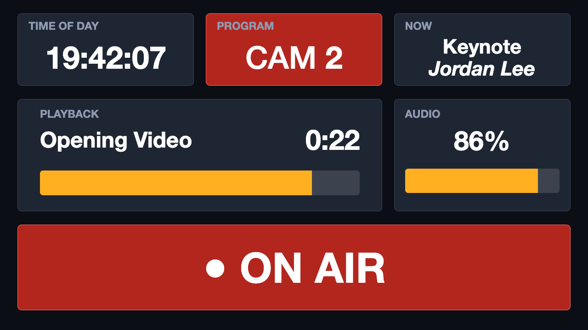
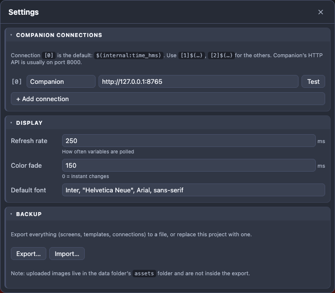
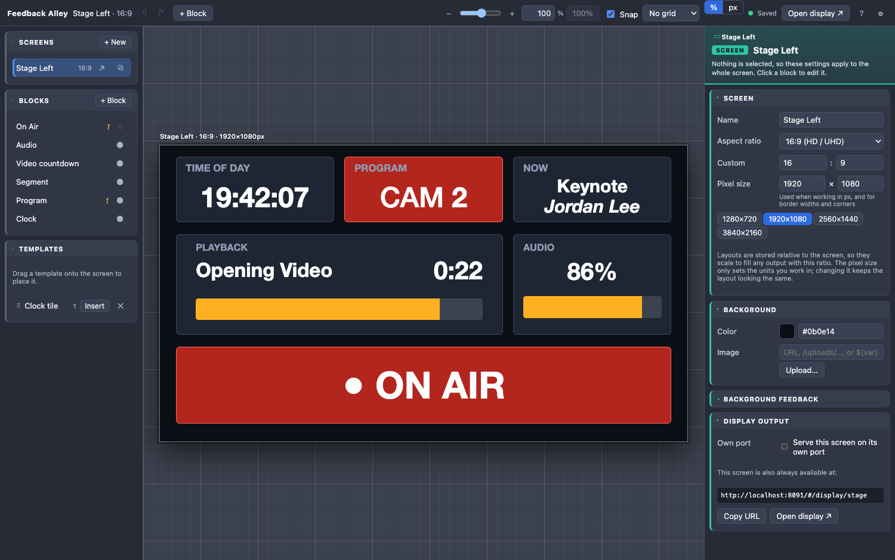
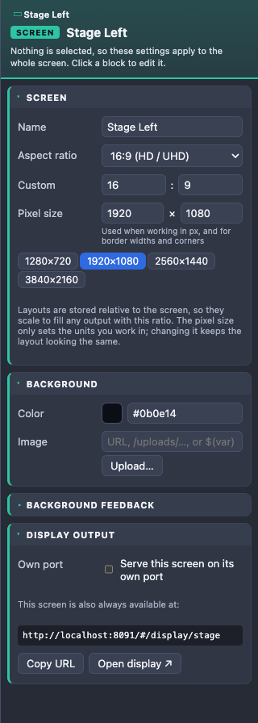
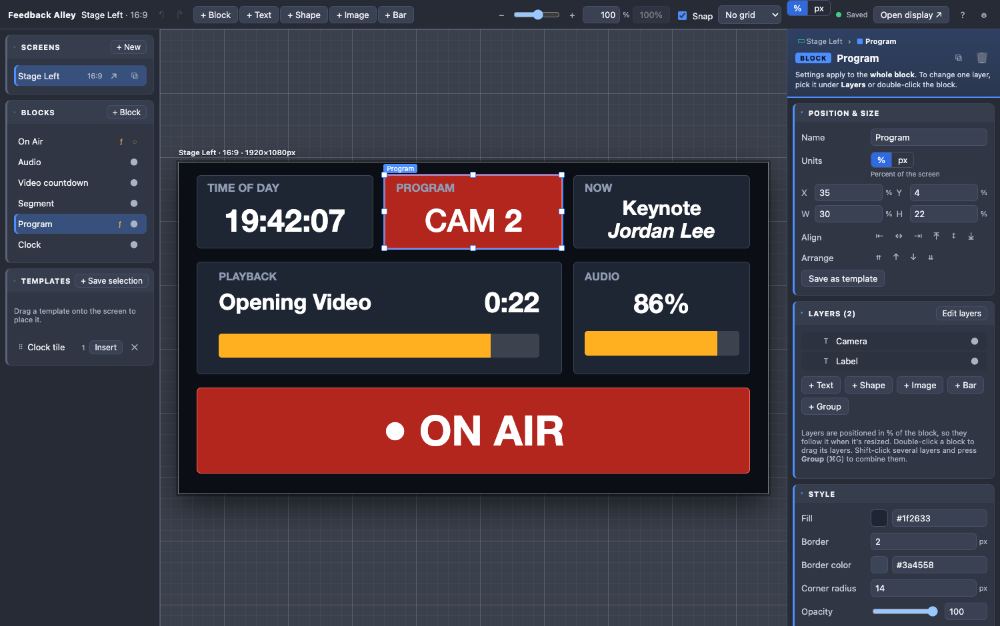
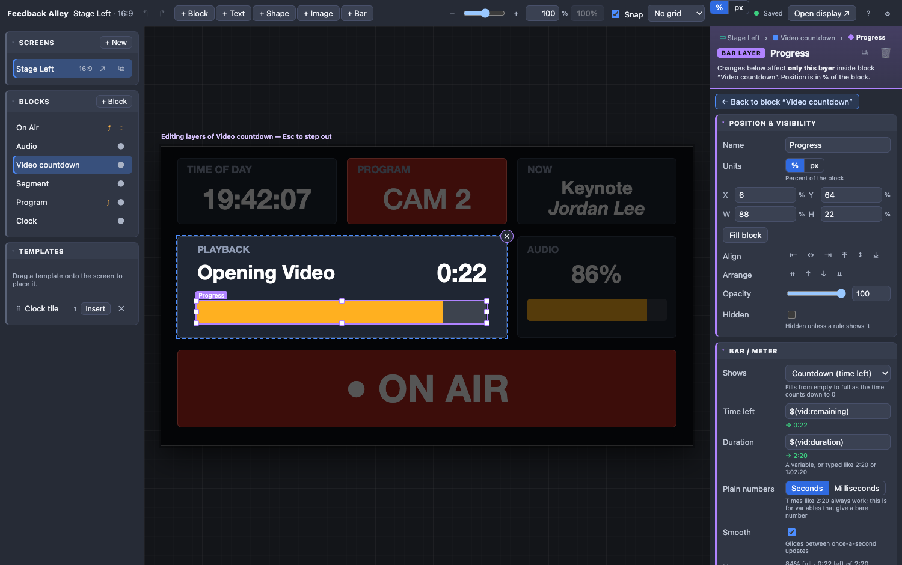
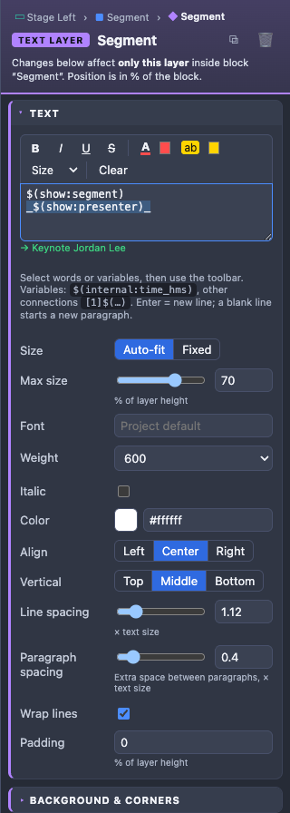
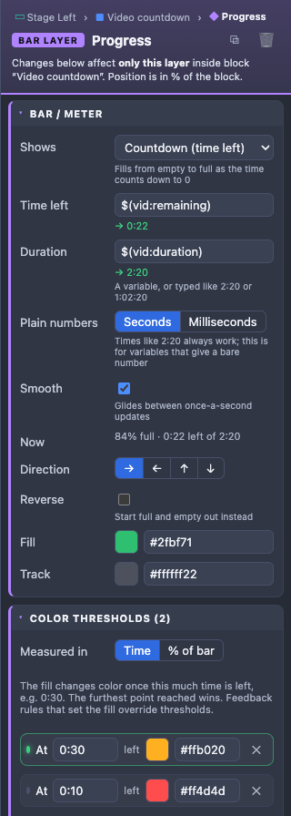
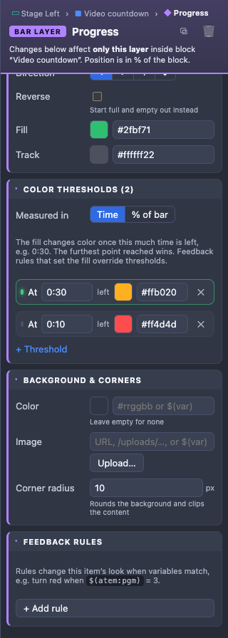
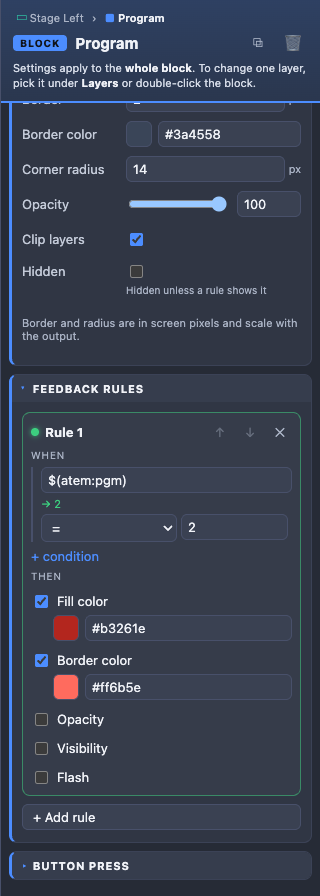

Feedback Alley User Guide
Live feedback displays for Bitfocus Companion
Introduction
Feedback Alley turns information from Bitfocus Companion into clean, full-screen displays for your crew and presenters: clocks, the camera on program, video countdowns, audio levels, who’s on stage, an ON AIR sign, and anything else Companion knows about.
You design each display in the editor, and it updates live as Companion’s variables change. Displays open in any web browser, on the computer running Feedback Alley or on any other computer, tablet or TV on the same network.

Install and first launch
Download the installer for your computer from the project’s Releases page:
| Computer | Download |
|---|---|
| Mac with Apple Silicon (M1 or later) | Feedback-Alley-<version>-mac-arm64.dmg |
| Mac with an Intel processor | Feedback-Alley-<version>-mac-x64.dmg |
| Windows | Feedback-Alley-<version>-windows-setup.exe |
| Linux | Feedback-Alley-<version>-linux-x86_64.AppImage |
Not sure which Mac you have? Choose Apple menu → About This Mac. If it lists a “Chip” such as Apple M1, M2 or M3, use the Apple Silicon download.
macOS
- Open the
.dmgfile and drag Feedback Alley into Applications. - Open Feedback Alley from Applications. Because the app isn’t from the App Store or an identified developer, macOS warns you and won’t open it the first time. Click Done.
- Open System Settings → Privacy & Security, scroll down to the Security section and click Open Anyway next to Feedback Alley, then confirm.
You only need to do this once.
If Open Anyway doesn’t appear, or macOS says the app “is damaged”, open Terminal and run this once:
xattr -dr com.apple.quarantine "/Applications/Feedback Alley.app"Windows
- Run the setup file. If Windows SmartScreen says it protected your PC, click More info → Run anyway.
- Follow the installer. You can choose where to install it.
- The first time it runs, Windows may ask whether to allow Feedback Alley on your networks. Allow private networks so other computers can show your displays.
Linux
Make the AppImage executable (right-click → Properties → Allow executing, or chmod +x), then double-click it.
What happens when it runs
Opening Feedback Alley starts the editor in a window, and also starts a small web server that your displays connect to. Displays keep working as long as Feedback Alley is running.
- macOS: closing the window keeps Feedback Alley running in the background for your displays. Quit with ⌘Q.
- Windows and Linux: closing the window quits Feedback Alley, which stops all displays. It asks first.
Connect to Companion
Feedback Alley reads variables from Companion and can press Companion buttons, using Companion’s HTTP API.
- Click ⚙ at the top right of the editor to open Settings.
- Under Companion connections, enter Companion’s address in connection
[0], for examplehttp://192.168.1.20:8000. Companion’s HTTP API usually uses port 8000. If Companion runs on this computer, usehttp://127.0.0.1:8000. - Click Test. You should see “Connected” with Companion’s current time.

The top bar of the editor shows the connection status: a green dot means Companion is connected.
More than one Companion
Click + Add connection to add another Companion. Connection [0] is the default; variables from the
others are written with the connection number in front, such as [1]$(atem:pgm). See Variables.
Display settings
| Setting | What it does |
|---|---|
| Refresh rate | How often Feedback Alley asks Companion for new values, in milliseconds. 250 ms (four times a second) suits most shows. |
| Color fade | How long color changes take to fade, in milliseconds. 0 makes changes instant. |
| Default font | The font used by text layers that don’t set their own. Any font installed on the display computer works. |
A tour of the editor

1 2 3 4 5- Screens: every display layout in your project. Click one to edit it.
- Blocks and Templates: the blocks on this screen, and saved blocks you can reuse.
- Canvas: the screen you’re designing, shown live with real values from Companion. Drag to move and resize things here.
- Inspector: settings for whatever is selected. The colored label at the top always tells you what you’re editing: Screen Block Layer.
- Top bar: add blocks and layers, undo and redo, zoom, snapping, grid, % or px units, connection status, this guide (?), and Settings (⚙).
How layouts work
| Item | What it is |
|---|---|
| Screen | One display layout with a fixed shape (aspect ratio), such as 16:9. A project can have many screens, for example one for stage left, one for the control room and one for the green room. |
| Block | A box on a screen, with a fill color, border and rounded corners. Blocks hold layers. |
| Layer | Content inside a block: text, a shape, an image or a bar. A block can have any number of layers stacked on top of each other. |
| Group | A layer that holds other layers, like a block within a block. |
| Template | One or more saved blocks, complete with their layers and rules, ready to reuse on any screen. |
Everything scales. Positions and sizes are stored relative to whatever contains them: blocks relative to the screen, layers relative to their block. That means a 16:9 screen looks exactly the same on a 720p monitor, a 1080p TV or a 4K projector, and when you resize a block, everything inside it resizes with it.
Screens
Click an empty part of the canvas (or press Esc until nothing is selected) to see the screen’s settings.

| Setting | What it does |
|---|---|
| Aspect ratio | The shape of the display: 16:9 (most TVs and monitors), 16:10, 4:3, 21:9, 32:9, 1:1, 9:16 (portrait), or a custom ratio. |
| Pixel size | The resolution you design at, such as 1920×1080 or 3840×2160. It sets the units when you work in pixels, and the scale of border widths and corners. The layout still scales to any output; changing this keeps the layout looking the same. |
| Background | A color and/or image behind everything. Colors and images can come from variables. |
| Background feedback | Rules that change the background color, for example turning the whole screen red when a timer runs out. See Feedback rules. |
| Display output | How to open this screen on a display. See Showing your screens. |
In the Screens list, + New adds a screen. Each screen in the list has buttons to open its display (↗), duplicate it, or delete it.
Blocks
Click + Block in the top bar or the Blocks list. Then:
- Move a block by dragging it, and resize it with the handles. Hold Shift while resizing to keep its proportions.
- Blocks snap to the screen edges and center and to other blocks; blue guide lines show what it snapped to. Hold Alt to drag without snapping, or turn Snap off in the top bar.
- Select several blocks with Shift-click or by dragging a box around them on an empty area.

Block settings
| Section | Settings |
|---|---|
| Position & size | Exact position and size, alignment, stacking order, and Save as template. |
| Layers | The block’s layers. Click one to edit it, and add new ones with + Text, + Shape, + Image, + Bar and + Group. |
| Style | Fill color, border width and color, corner radius, opacity, Clip layers (hide anything that sticks out of the block), and Hidden. |
| Feedback rules | Change the block’s look when Companion values change. See Feedback rules. |
| Button press | Turn on Press a Companion button and enter its location as page/row/column (for example 1/0/2). Clicking or tapping the block on a display then presses that button, which makes a display work as a simple touch panel. |
In the Blocks list, ƒ marks a block with feedback rules and ⏎ one that presses a button. The dot on the right shows and hides the block.
Hidden means hidden unless a rule shows it. That’s how you make things that appear only when needed, like an ON AIR sign. Hidden items still show faintly in the editor so you can work on them.
Layers
To work with a block’s layers, double-click the block (or select it and press Enter), or click a layer in the inspector’s Layers list. The rest of the screen dims, and you can click, drag and resize layers inside the block. Press Esc to step back out.

| Layer | Use it for |
|---|---|
| Text | Labels and live values. Mix plain text, variables and formatting. See Text and formatting. |
| Shape | A colored rectangle or rounded box, with an optional border. Good for backgrounds, dividers and status lights. |
| Image | A logo or picture. Click Upload… to add one, or enter a web address or a variable. Fit chooses whether the image fits inside, fills, or stretches to the layer. |
| Bar | Meters, progress bars and countdowns. See Bars, meters and countdowns. |
| Group | Several layers that move and resize together. See Groups. |
Every layer also has:
- Position & visibility: position and size within the block, alignment, opacity and Hidden. Fill block makes the layer cover the whole block.
- Background & corners: a background color and/or image for just this layer, and rounded corners.
- Feedback rules: change this layer when Companion values change.
Layers higher in the Layers list are drawn on top. Use the Arrange buttons to move a layer forward or backward.
Text and formatting

Type into the text box. Add Companion variables anywhere, such as Camera $(atem:pgm). Below the box, a green
line shows what the text says right now. Press Enter for a new line; leave a blank line to start a new paragraph.
Formatting words and variables
Select any words or variables, then use the toolbar above the text box:
| Button | Does | Shortcut |
|---|---|---|
| B | Bold | ⌘B / Ctrl+B |
| I | Italic | ⌘I / Ctrl+I |
| U | Underline | ⌘U / Ctrl+U |
| Strikethrough | ||
| A | Text color. Pick the color with the swatch next to it. | |
| ab | Highlight (a colored background behind the words) | |
| Size | Make the selection 50% to 200% of the layer’s text size | |
| Clear | Remove formatting from the selection, or from everything if nothing is selected |
Applying the same format again removes it.
Typing formatting by hand
The toolbar adds markers to your text. You can also type them yourself:
| Type | Result |
|---|---|
**words** | bold |
_words_ or *words* | italic |
++words++ | underline |
~~words~~ | |
{color:#ff4d4d}words{/color} | text color |
{bg:#ffd400}words{/bg} | highlight |
{size:150%}words{/size} | bigger or smaller text |
{weight:300}words{/weight} | font weight, 100 to 900 |
{font:Oswald}words{/font} | a different font |
Text settings
| Setting | What it does |
|---|---|
| Size | Auto-fit makes the text as large as fits in the layer, up to Max size, so changing values never overflow. Fixed uses one size. Sizes are in % of the layer’s height. |
| Font, Weight, Italic, Color | The look of the whole layer. Color can be a variable. |
| Align, Vertical | Where the text sits in the layer. |
| Line spacing | Space between lines, as a multiple of the text size. |
| Paragraph spacing | Extra space between paragraphs (separated by a blank line). |
| Wrap lines | Wrap long text onto more lines instead of shrinking it onto one. |
| Padding | Space between the text and the layer’s edges. |
Bars, meters and countdowns
A bar layer shows a value as a filled bar, in any direction. Set Shows to one of:
| Shows | Use it for |
|---|---|
| A number (min to max) | Levels and percentages. Give it a variable that holds a number, such as $(audio:level), and the range, such as 0 to 100. |
| Countdown (time left) | Video and timer progress. The bar starts empty and fills as the time counts down to 0. |
| Time elapsed | A clock that counts up. The bar fills as the time reaches the duration. |


Countdown example: a 2:20 video
- Add a bar layer and set Shows to Countdown (time left).
- In Time left, enter the video’s time-remaining variable from Companion.
- In Duration, enter the video’s duration variable, or type the length, such as
2:20.
At 2:20 left the bar is empty; at 1:10 it’s half full; at 0:00 it’s full. The Now line shows the live reading, such as “84% full · 0:22 left of 2:20”.
- Times can be written as seconds (
140),2:20,1:02:20or01:02:20:12(frames are ignored). - If a variable gives a plain number, set Plain numbers to Seconds or Milliseconds to match.
- Smooth keeps the bar gliding between Companion’s once-a-second updates. If the video pauses, the bar stops within a second.
- Reverse starts the bar full and empties it instead.
- Direction fills left-to-right, right-to-left, bottom-to-top or top-to-bottom.
Color thresholds
Thresholds change the bar’s color as it fills, for example amber at 80 and red at 90 on an audio meter. Click + Threshold, then set where it starts and its color. The furthest threshold the bar has reached sets the color.
- Measured in: Value (or Time for countdowns) uses the bar’s own numbers, for example
80on a 0–100 meter, or0:30for 30 seconds left. - Measured in: % of bar uses how full the bar is, for example
90for 90% full.
A feedback rule that sets the fill color overrides the thresholds while it matches.
Groups
A group is a layer that holds other layers, like a small block inside a block. Group layers that belong together, such as a label, a value and an indicator, so they move, resize, hide and show as one.
- Group: select several layers (Shift-click, or ⌘A / Ctrl+A for all) and press ⌘G / Ctrl+G.
- Ungroup: select the group and press ⇧⌘G / Shift+Ctrl+G. Everything stays where it is.
- Work inside a group: double-click it, or select it and press Enter. Esc steps back out.
- Groups have their own background, border, corners, clipping and feedback rules, and can contain other groups.
Variables
A variable is written $(connection:name), exactly as Companion shows it, for example $(internal:time_hms)
or $(atem:pgm). You can find variable names in Companion’s Variables page.
Variables work in text, in color fields, in image addresses, and in feedback rule conditions.
| Write | Means |
|---|---|
$(atem:pgm) | The variable from connection [0], your main Companion |
[1]$(atem:pgm) | The same variable from connection [1] |
\$(atem:pgm) | The text “$(atem:pgm)” itself, not its value |
Under most fields that contain a variable, a green line shows its current value, so you can check it’s right while you work. Colors can come from variables too, including the color numbers Companion uses.
Feedback rules
Rules change how a screen, block or layer looks when Companion values change: turn a block red when its camera is on program, show a warning when a timer runs low, or replace a label’s text.

$(atem:pgm) equals 2, fill the block red and change its border. The green dot means the rule matches right now.Making a rule
- Open Feedback rules on the item and click + Add rule.
- Under When, enter a variable, choose a comparison, and enter the value to compare with. That value can be another variable. Add more conditions with + condition, and choose whether all or any of them must match.
- Under Then, tick what should change and set the new value.
| Comparison | Matches when |
|---|---|
| = and ≠ | The value is (or isn’t) exactly this |
| > ≥ < ≤ | Numbers are greater or less than this |
| contains / does not contain | The text includes (or doesn’t include) this |
| is empty / is not empty | The value is (or isn’t) blank |
Rules can change the fill color, text color, border color, background color, opacity, visibility, make the item flash, or replace its text (with formatting). What’s available depends on the item.
Several rules? They’re checked from top to bottom, and for each property the first rule that matches wins. Use the arrows to reorder them.
Templates
Templates let you build something once, such as a styled clock or a camera tally, and reuse it on any screen.
- Save: select one or more blocks and click Save as template in the inspector, or + Save selection in the Templates list.
- Place: drag a template from the Templates list onto the canvas. It snaps into place like a move.
- Insert: click Insert to put it exactly where it was when you saved it.
Templates keep their real proportions when you use them on a screen with a different shape.
Precise positioning
Zoom
- Pinch on a trackpad, or hold ⌘ / Ctrl and scroll, to zoom toward the pointer.
- Use the zoom controls in the top bar: −/+, the slider, or type a percentage. 100% fits the whole screen.
- Shortcuts: ⌘= zoom in, ⌘− zoom out, ⌘0 back to 100% (Ctrl on Windows and Linux).
- While zoomed in, scroll to pan, or hold Space and drag.
Percent or pixels
Switch % / px in the top bar, or above any position fields, to work in percentages or in pixels. In pixels, blocks are measured from the screen’s top-left corner and layers from their block’s top-left, using the screen’s Pixel size. Dragging and resizing land on whole pixels, and the grid is in pixels.
Nudge, align and distribute
- Arrow keys move the selection by 0.1% (1 px in pixel mode). Hold Shift for 1% (10 px).
- Align lines up one item with its screen, block or group, or several items with each other.
- Distribute spaces three or more selected items evenly.
- Turn on a grid in the top bar to snap to regular steps.
Showing your screens
Each screen is a web page. Open it in a browser on any computer, tablet or smart TV that can reach the computer running Feedback Alley.
Give a screen its own address (recommended)
- Select the screen (click an empty part of the canvas) and open Display output.
- Turn on Serve this screen on its own port and choose a port number, such as 8101.
- On the display computer, open
http://<address>:8101/, where<address>is the network address of the computer running Feedback Alley.
The address stays the same even if you rename the screen. To show a different screen on that display, move the port to another screen; open displays switch over automatically.
To find the address, choose File → Copy Network Address in Feedback Alley. If it lists more than one, use the one on the same network as your displays.
Other ways to open a display
- Open display ↗ in the top bar opens the current screen in your browser.
- Every screen also has a permanent link, shown under Display output, with Copy URL.
On the display
- Double-click to go full screen (and again to leave).
- The mouse pointer hides when it isn’t moving.
- Edits you make in the editor appear on displays straight away; there’s no need to reload.
- Blocks with a button press press their Companion button when clicked or tapped.
Displays need Feedback Alley to be running. On macOS it keeps running when you close the window; on Windows and Linux, leave the window open.
Backup and moving projects
Feedback Alley saves your work automatically as you go. To keep a copy or move a project to another computer:
- Export: open ⚙ Settings → Backup → Export…, then choose a name and where to save it.
- Import: Import… replaces the current project with a saved file. You can undo it.
Exports contain your screens, templates, connections and settings, but not uploaded images. To bring images along, also copy the
assets folder from File → Show Data Folder into the same folder on the other computer.
Where your project is saved:
| macOS | ~/Library/Application Support/Feedback Alley/data |
| Windows | %APPDATA%\Feedback Alley\data |
| Linux | ~/.config/Feedback Alley/data |
Keyboard shortcuts
On Windows and Linux, use Ctrl where these show ⌘.
| Keys | Action |
|---|---|
| ⌘Z / ⇧⌘Z | Undo / redo |
| ⌘C / ⌘V | Copy / paste (also between screens) |
| ⌘D | Duplicate |
| Delete | Delete the selection |
| Enter or double-click | Work inside a block or group |
| Esc | Step out one level |
| ⌘A | Select all layers in the current block or group |
| ⌘G / ⇧⌘G | Group / ungroup layers |
| Arrow keys (+ Shift) | Nudge 0.1% (1%), or 1 px (10 px) in pixel mode |
| Shift while resizing | Keep proportions |
| Alt while dragging | Don’t snap |
| ⌘= / ⌘− / ⌘0 | Zoom in / out / back to 100% |
| Pinch, or ⌘ + scroll | Zoom toward the pointer |
| Space + drag | Pan while zoomed |
| ⌘B / ⌘I / ⌘U | Bold / italic / underline the selected text |
Troubleshooting
The top bar says “Companion unreachable”
- Check the address in ⚙ Settings and click Test. It needs the
http://and the port, usually:8000. - Make sure Companion is running and that this computer can reach it on the network. A firewall on either computer can block it.
A variable shows nothing
- Check the spelling against Companion’s Variables page, including the connection name before the colon.
- If it comes from a second Companion, put its connection number in front, such as
[1]$(…).
A display can’t connect
- Use the computer’s network address (File → Copy Network Address), not
localhost, on other devices. - Make sure Feedback Alley is running, and that the display is on the same network.
- On Windows, allow Feedback Alley through Windows Defender Firewall for private networks.
- If a screen’s own port shows a warning such as “Port is already in use”, choose a different port number.
Feedback Alley says port 8090 is in use
Another program is using it, so Feedback Alley picked the next free port and told you which. Use the new address on your displays, or close the other program and restart Feedback Alley.
macOS says the app “is damaged” or won’t open
See Install and first launch for the Open Anyway steps and the Terminal command.
Images are missing after moving a project
Exports don’t include uploaded images. Copy the assets folder as described in Backup and moving projects.